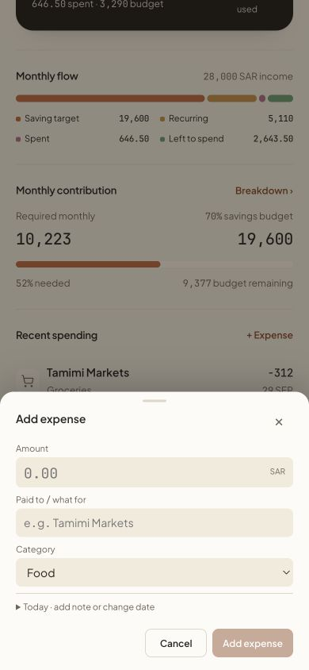
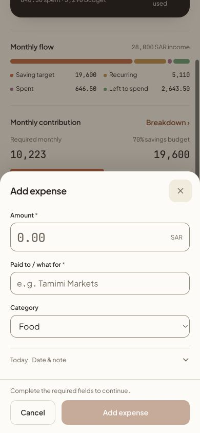
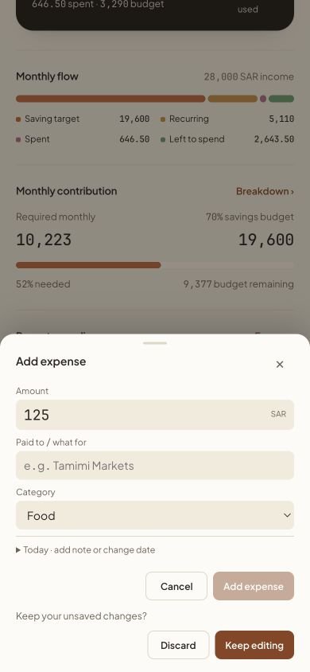
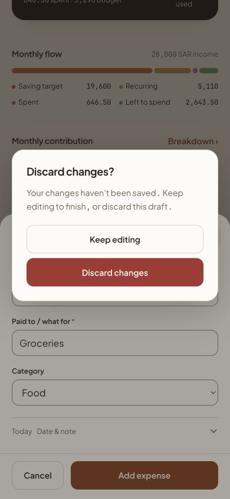
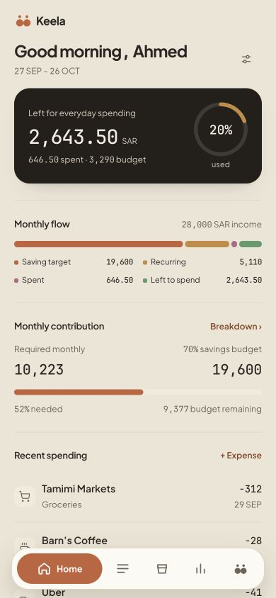
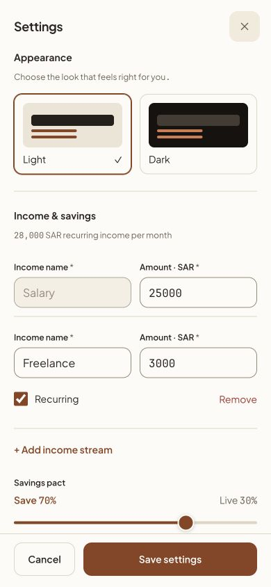

Keela · interface review
The same warm identity, with consistent controls and calmer interaction.
Before: 51c0330. After: this working tree. All screenshots use synthetic demo records at 390 × 844. Live publication authorized by the user; physical iPhone checks remain pending.Home
Stable navigation and clearer hierarchy.
Expense entry
Compact sheet, readable fields, fixed actions.
Before
After
Discard confirmation
A focused choice above the preserved draft.
Before
After
Settings
Full-height view with separate sections and a persistent save action.
Before
After